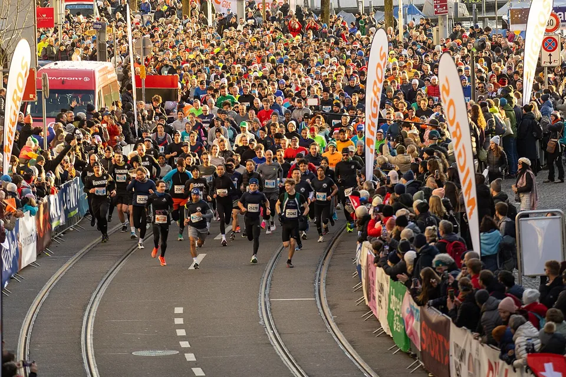

Laufen im Winter: So macht Training bei Kälte und Dunkelheit Spaß
Start des Zürcher Silvesterlaufs 2024. Foto: Zürcher Silvesterlauf fernblau, Wikimedia Commons, CC BY-SA 4.0
Es wird früh dunkel, draußen ist es kalt, und das Sofa ist so gemütlich. Und trotzdem: Ein Lauf an einem klaren Wintermorgen, mit Raureif auf den Wiesen und dampfendem Atem, gehört zu den schönsten Läufen des Jahres. Mit ein paar Tricks macht der Winter richtig Spaß – und im Frühjahr bist du der Konkurrenz einen Schritt voraus.
Zieh dich an wie eine Zwiebel
Das Geheimnis heißt Schichten statt dicker Jacke. Drei dünne Lagen halten wärmer als eine dicke und lassen sich unterwegs anpassen:
- Innen: ein Funktionsshirt, das Schweiß nach außen leitet. Baumwolle bleibt nass und kühlt aus.
- Mitte: ein leichtes Langarmshirt oder eine dünne Fleecejacke – bei richtig kaltem Wetter.
- Außen: eine Jacke gegen Wind und Nieselregen.
Eine gute Faustregel: Beim Loslaufen darf dir ein bisschen kühl sein. Nach zehn Minuten ist dir warm – und wer zu dick eingepackt startet, schwitzt sich nass.
Kopf, Hände und Hals verlieren schnell Wärme. Mütze oder Stirnband, dünne Handschuhe und ein Schlauchtuch sind die besten Investitionen für den Winter. Das Tuch kannst du bei Frost auch über Mund und Nase ziehen, dann ist die Luft beim Einatmen etwas wärmer.
Sehen und gesehen werden
Im Winter läufst du oft im Dunkeln. Das kann sogar richtig schön sein – wenn du gut zu sehen bist und selbst gut siehst:
- Hell und reflektierend: Eine Weste oder Jacke mit Reflektoren, dazu Reflektorbänder an den Knöcheln – die Bewegung fällt Autofahrern besonders auf.
- Eine Stirnlampe zeigt dir Wurzeln, Pfützen und Bordsteine, bevor du drüber stolperst.
- Beleuchtete Wege wählen: Parks mit Laternen, Uferwege in der Stadt oder ein Lauftreff, der gemeinsam unterwegs ist.
Wenn es glatt wird
Bei Schnee und Eis hilft es, die Schritte etwas kürzer zu machen und den Fuß flach unter dem Körper aufzusetzen – wie beim Gehen auf glattem Boden. Trailschuhe mit grobem Profil greifen besser als Straßenschuhe, und für vereiste Wege gibt es Spikes zum Überziehen.
Und ganz ehrlich: An Tagen mit Blitzeis ist ein Ruhetag, ein Lauf auf dem Laufband oder eine Einheit auf der Rolle die klügere Wahl. Das Training läuft dir nicht weg.
So bleibst du dran
- Feste Termine: Plan deine Läufe wie Verabredungen. Wer weiß, dass er Dienstag um 18 Uhr läuft, diskutiert nicht jeden Abend neu mit sich.
- Lauf in der Gruppe: Wenn jemand auf dich wartet, gehst du auch bei Nieselregen raus. Viele Vereine und Lauftreffs laufen den ganzen Winter.
- Mittagspause nutzen: Wer kann, läuft im Hellen – ein kurzer Lauf in der Mittagssonne hebt die Laune für den ganzen Tag.
- Ein Ziel im Kalender: Ein Silvesterlauf, ein Crosslauf oder eine Winterlaufserie gibt dem Training einen Sinn. Unser Tipp: Schau dir die Liste unten an.
- Belohn dich: Eine heiße Dusche, ein Tee, das gute Gefühl danach. Du warst draußen – während andere auf dem Sofa saßen.
Locker ist das neue Schnell
Der Winter ist die perfekte Zeit für ruhige, gleichmäßige Läufe. Du musst jetzt keine Bestzeiten jagen. Viele lockere Kilometer bauen die Grundlage auf, auf der du im Frühjahr schnell wirst. Wenn du doch mal Tempo machen willst: kurze Steigerungen am Ende eines Laufs, wenn du richtig warm bist.
Wärm dich bei Kälte etwas länger ein und lauf die ersten Minuten bewusst gemütlich. Und nach dem Lauf: schnell raus aus den nassen Sachen, bevor du auskühlst.
Drinnen geht auch
An Tagen, an denen es draußen gar nicht geht, sind Alternativen kein Aufgeben: Laufband, Radfahren auf der Rolle, Schwimmen oder ein paar Übungen für Rumpf und Beine. Gerade Kräftigung zahlt sich aus, wenn die Saison wieder losgeht.
Fazit
Gute Schichten, Licht, ein Lauftreff oder ein festes Ziel – mehr braucht es nicht. Wer im Winter dranbleibt, startet mit Vorsprung ins Frühjahr. Und die schönsten Fotos des Jahres macht man sowieso bei Raureif.
Dein Ziel für den Winter
Silvesterläufe, Crossläufe und Winterlaufserien in deiner Nähe – alle Laufevents in Deutschland, Österreich, der Schweiz und Südtirol.
Alle Tipps in diesem Beitrag sind Erfahrungswerte.